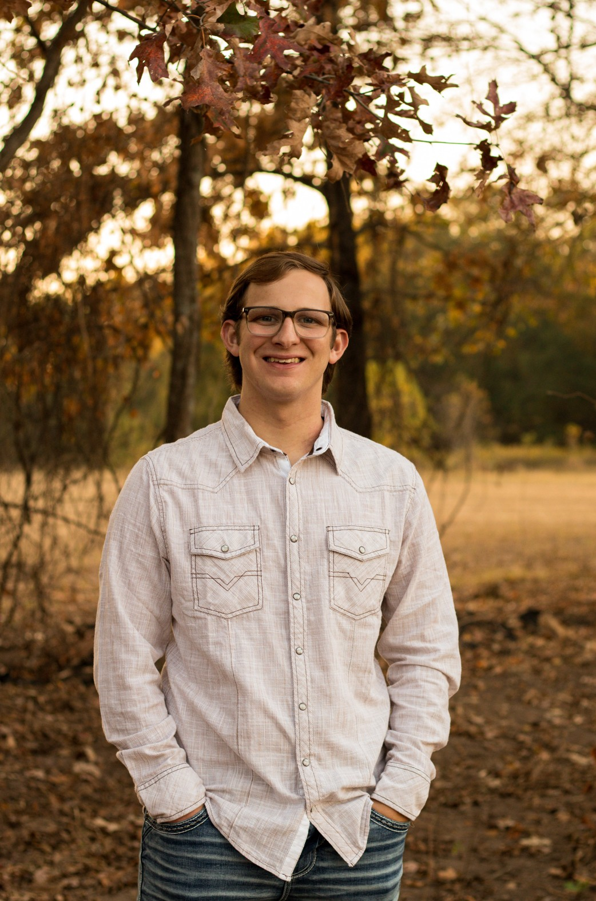

A hard working and motivated Web Design and Development major with a strong background in technology, problem-solving, and team leadership. With hands-on experience in building computers, running different software's, and creating multiple engaging digital projects, I bring both technical knowledge and leadership into every project I take on. My skills in HTML, CSS, JavaScript, and IT support allows me to approach any challenge with confidence and adaptability.
In addition to my academic work, I have balanced multiple jobs, including roles working for my scholarship program in college, landscaping, and working as a team manager for the UALR men's basketball team. These experiences have strengthened my communication skills, time management, and my ability to work efficiently in fast paced environments. I also am a volunteer for my church, where I help run media and sound, this reflects my commitment to serving the community and individuals.
I am known for being outgoing, reliable, and dedicated to helping others. Whether I am solving a technical issue, supporting a team, or designing a website, I bring energy, patience, and a strong work ethic.